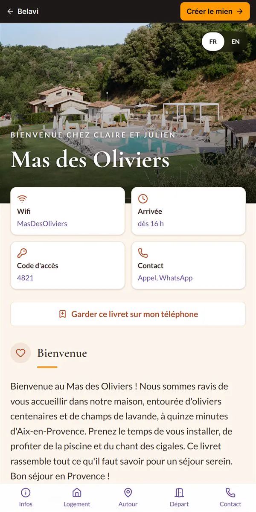
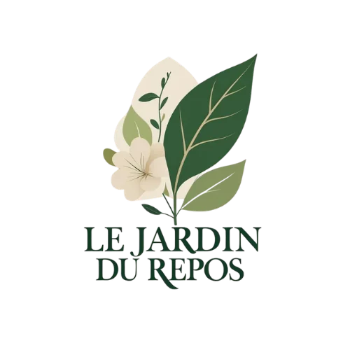
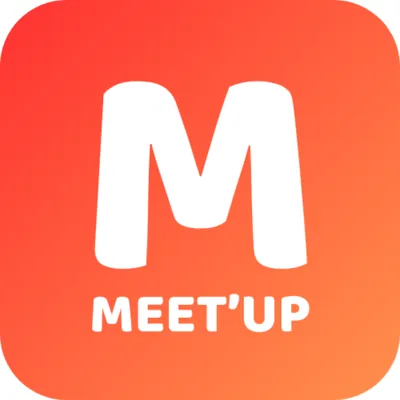

Des marques lancées, pas des maquettes.
Cinq projets menés sur le terrain, de la première idée à la mise en ligne — ou à la bêta pour Shibui. Avec ce que chacun m'a appris.

Ouvrir le livret Belavi en grand ↗
Belavi
Produit personnel · Livret d’accueil digital · Depuis 2026
Un livret d’accueil digital pour les hôtes et les conciergeries : une annonce devient un guide que les voyageurs consultent sur leur téléphone. J’ai conçu la marque, le parcours et la plateforme, avec un développement assisté par IA. Un projet personnel qui réunit les compétences que je mobilise pour vos projets.
- Mon rôle
- Marque, parcours hôte et voyageur, plateforme, intégration des abonnements.
- Le produit
- Génération par IA · 5 langues · 8 ambiances · abonnements Stripe.


FregaHouse
SAS FregaConcept · Immobilier · 2025–2026
Une marque immobilière construite intégralement, du nom aux panneaux du salon. J'ai nommé et différencié les deux gammes — Gaïa pour les maisons de famille, Lumina pour les architectures contemporaines — puis décliné une identité cohérente du site jusqu'au stand physique. Le site a été monté sur Wix pour tenir un délai très court. La marque est arrivée au salon de l'immobilier prête à vendre.
- Mon rôle
- Naming, positionnement, logo, charte graphique, site, supports salon, structuration de l'offre.
- Résultat
- 2 gammes lancées · marque livrée en 30 jours · 1 salon couvert de bout en bout.
Ce que j'en retiens — une bonne marque ne tient que si elle se distribue.



Le Jardin du Repos
Service cofondé en 2025 · Entretien de sépultures · Activité terminée
Un service pensé pour les familles éloignées qui veulent continuer à prendre soin d'une tombe. Tout est parti d'une page blanche : le positionnement, le nom, l'identité — avec le ton juste pour un sujet sensible — puis le site et un simulateur tarifaire codé sur mesure pour transformer une demande floue en devis en trois clics.
- Mon rôle
- Concept, modèle économique, logo, charte graphique, site, simulateur, communication de lancement, terrain.
- Résultat
- Premier client signé · prestations réalisées sur le terrain · devis automatisé du premier contact à la facture.
L’activité est aujourd’hui terminée et le site n’est plus accessible. Les captures présentent le travail réalisé lors de son lancement.
Ce que j'en retiens — livrer le service soi-même change ce qu'on vend.

Shibui
Projet cofondé · Application · Depuis octobre 2024
Le projet est né sous le nom de Meet'up, comme une plateforme large de développement personnel. Trop large. En 2025, nous l'avons recentré sur un problème précis et vérifiable : la recherche de stage et d'alternance. Même noyau d'équipe, ambition identique, cible enfin nette. C'est le projet qui m'a appris à conduire un pivot sans perdre l'équipe en route.
- Mon rôle
- Cofondation, chef de projet, logo et charte graphique, arbitrage du pivot, coordination pluridisciplinaire, pitch jury.
- Résultat
- 16 personnes coordonnées sur Meet'up, 12 sur Shibui · 1 pivot assumé · bêta en cours.
Ce que j'en retiens — savoir tuer son idée initiale, c'est savoir avancer.

Portfolio éditorial
Projet personnel · En ligne · Mis à jour en continu
Un site portfolio conçu et codé sur mesure avec l'IA (Claude Code) : structure, direction artistique, intégration, mise en ligne. Aucun framework, aucun constructeur de pages — et le site Studio Balesi que vous lisez est construit de la même façon. C'est le terrain sur lequel je teste ce que je propose ensuite en mission — je ne vends pas une méthode que je n'aurais pas éprouvée sur mon propre site.
- Mon rôle
- Direction artistique, rédaction, développement front, déploiement, maintenance.
- Stack
- HTML sémantique, CSS moderne (variables, grid), JavaScript vanilla, GitHub Pages.
Ce que j'en retiens — ce qu'on fait soi-même, on sait l'expliquer.
Ce que ces projets ont en commun.
Aucun n'est resté au stade de la présentation. Tous sont allés jusqu'à l'utilisateur final.
5projets
Menés sur le terrain
Cinq projets réalisés, dont Shibui en bêta.
4marques
Créées de A à Z
Nom, identité, supports et premiers contenus.
16personnes
Coordonnées sur un même projet
Équipe pluridisciplinaire, du cadrage à la bêta.
Le prochain projet pourrait être le vôtre.
Un premier échange gratuit pour comprendre votre besoin et voir concrètement comment je peux vous aider.